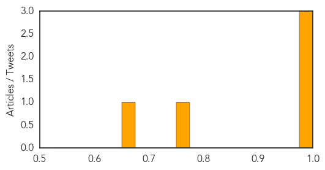
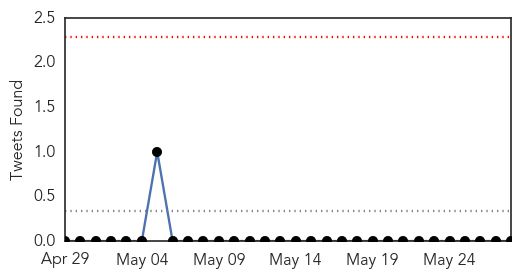

Chikungunya
30-Day Web Trend
4 alerts, 6 warnings

30-Day Twitter Trend
0 alerts, 0 warnings

Article Locations

Article Confidences
Top Articles:
- 1.000
- Mosquito-borne chikungunya virus spreads in the Caribbean
- 0.999
- Two Chikungunya fever cases confirmed
- 0.993
- Painful and rapid spread of new virus in Caribbean
- 0.760
- Medina orders all Government agencies to fight chikungunya
- 0.661
- Mosquito invasion: Queensland scientists breed aggressive Asian tiger mosquito
Top Tweets:
-
No tweets found for May 28, 2014
Ebola
30-Day Web Trend
0 alerts, 0 warnings

30-Day Twitter Trend
0 alerts, 0 warnings

Article Locations

Article Confidences

Top Articles:
- 1.000
- West Africa Ebola outbreak still spreading, "situation serious" -WHO
- 1.000
- Relatives remove Sierra Leone Ebola patients from clinic
- 1.000
- UPDATE 1-West Africa Ebola outbreak still spreading, situation serious -WHO
- 1.000
- More Ebola Cases Confirmed In West Africa; WHO Says Outbreak Is ‘Serious’
- 1.000
- West Africa Ebola outbreak still spreading, 'situation serious'
- 1.000
- West Africa Ebola outbreak still spreading, 'situation serious,' WHO says
- 1.000
- WHO: Ebola Virus Is Still Spreading
- 1.000
- Villagers Stone Workers Tracking Ebola in Sierra Leone
- 1.000
- Sierra Leone Ebola patients removed from clinic
- 1.000
- West Africa Ebola outbreak still spreading, 'situation serious': WHO
- 1.000
- Ebola still spreading in West Africa
- 0.999
- Second person dies from Ebola virus in Sierra Leone – BorneoPost Online
- 0.999
- This catchy West African dance tune carries a public health message about Ebola
- 0.999
- Second Person Dies from Ebola Virus in Sierra Leone — Naharnet
- 0.999
- Sierra Leone Ebola patient's family remove her from local health centre
- 0.998
- How Guinea Handles Ebola Misinformation
- 0.989
- West Africa Ebola outbreak still spreading, situation serious: WHO
- 0.988
- Ebola vaccine for chimps works but may never be used
- 0.536
- Page not found
Top Tweets:
-
No tweets found for May 28, 2014